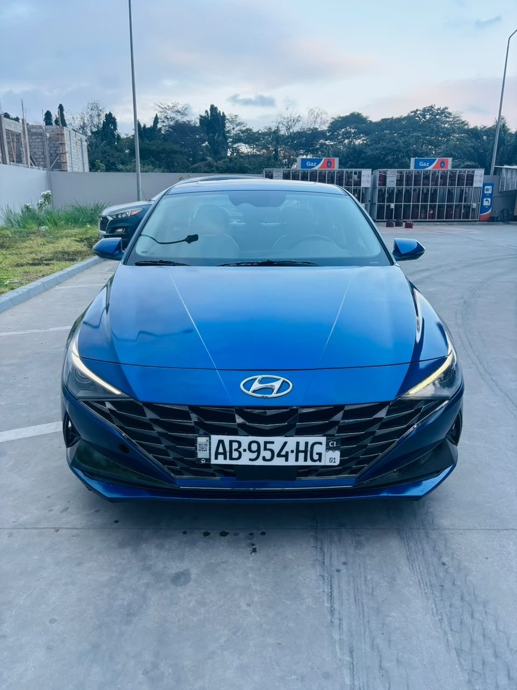

À vendreLimited
Hyundai Elantra Limited 2022
2022 · Essence · Automatique · 30 000 km
13 500 000 FCFA
Année2022
VersionLimited
Kilométrage30 000 km
CarburantEssence
Moteur4 cylindres
BoîteAutomatique
DémarrageStart/Stop et à distance
IntérieurCuir blanc chauffant
ToitOuvrant
MultimédiaNavigation et CarPlay
ClimatisationD’origine
ÉquipementDétecteur de mouvement
Full option selon le vendeur. Démarrage à distance, écran de navigation avec CarPlay, intérieur cuir blanc chauffant et toit ouvrant.
Disponibilité, kilométrage, équipements et documents à confirmer avec le propriétaire lors de la visite.